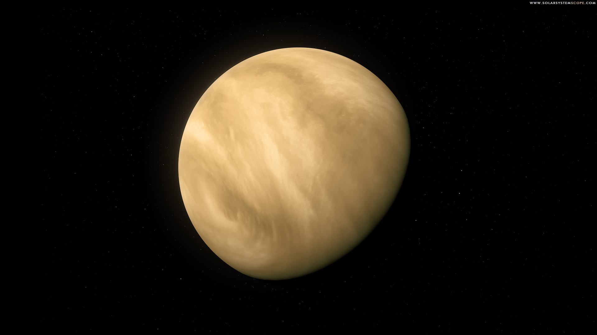

I guess you could say Physics is my favourite subject, both because I'm good at it, but also because it aims to answer the major questions facing us, both extra small (sub-atomic) and extra large (in the cosmos). Astrophysics is highly interesting to me, and the cosmos seem like the future of humanity's survival. Having completed a year-long dissertation concerning this topic, I am sure that in order to ensure our species' survival, we have to become multi-planetary.
Currently in physics, my favourite topic has to be mechanics, especially because of the fact that, by calculation, real life problems can be solved. Physics in general seems to me to be the main future of scientific research, especially when considering quantum mechanics, and dark matter. The unexplainable phenomenon we observe are puzzling, and equally intriguing. As put by Bill Bryson, “Physics is really nothing more than a search for ultimate simplicity, but so far all we have is a kind of elegant messiness.”
